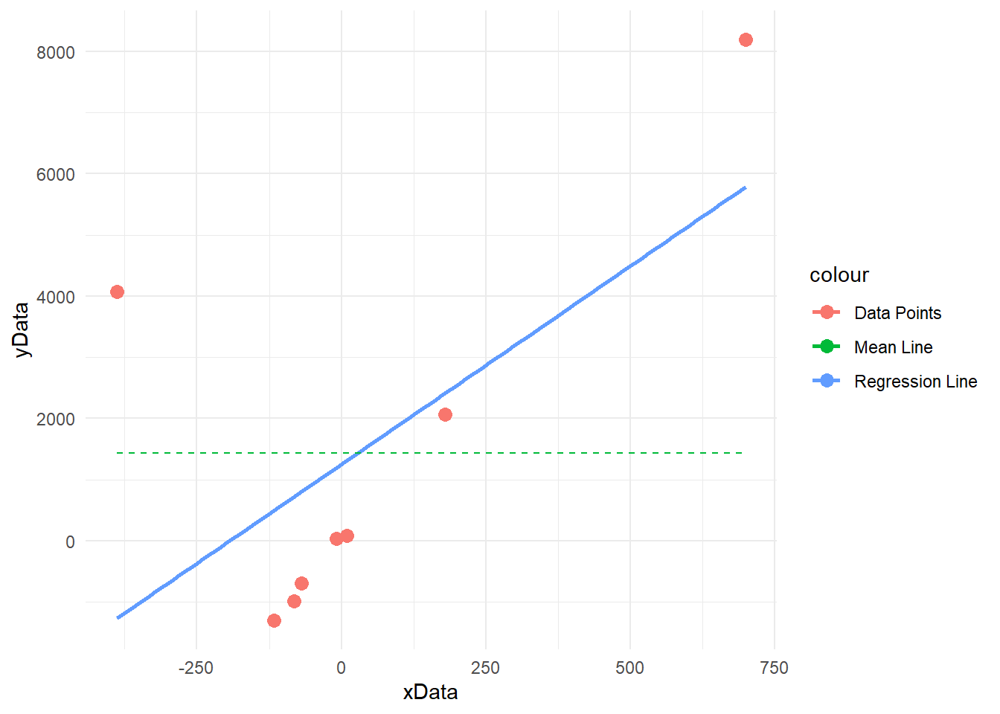
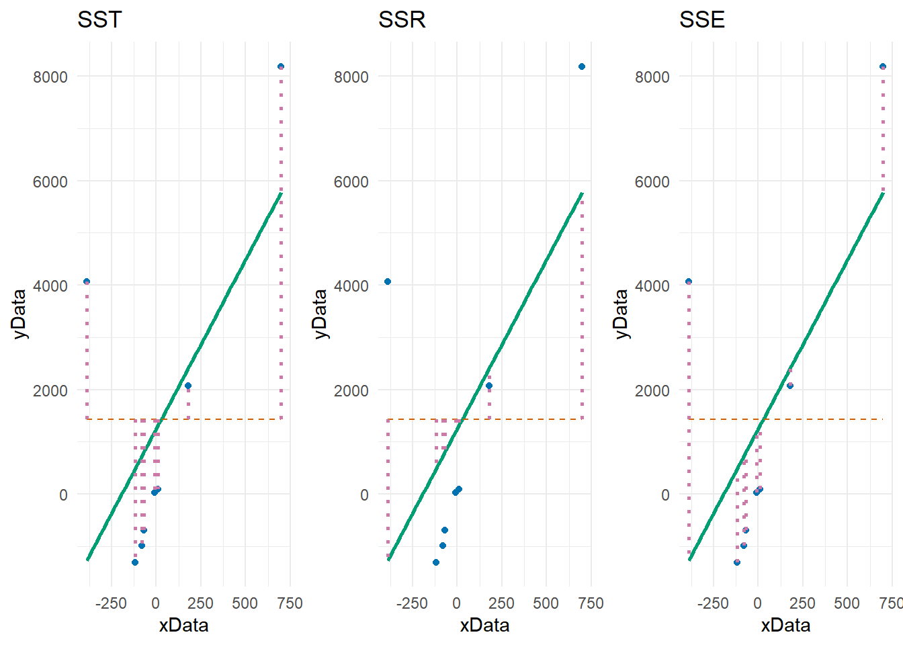

In this document, I illustrate the concept of sum of squares and other foundational concepts in regression and ANOVA. I use a simple linear regression (SLR) model as an example.
This is a topic that is often confusing for beginners in statistics and is frequently glossed over in introductory courses. By explaining the terminology, illustrating the concepts visually, and explaining the confusing concept of degrees of freedom, I hope to provide a more intuitive understanding of these concepts.
An intuitive grasp of these foundational concepts is essential for understanding more advanced statistical concepts and for interpreting the output of statistical models.
The Importance of Understanding the Basics
Most aspiring data science practitioners are inclined to rush into the use of machine learning models without learning the basics of statistics - the misconception being that machine learning is a more advanced and more practical version of statistics. This is a critical mistake.
To illustrate this, consider a feature selection algorithm widely used in machine learning called Boruta. It is based on the idea of comparing the importance of the original features with the importance of random features. The algorithm is a surprisingly deft application of introductory statistical concepts such as the probability mass functions, the binomial distribution, and z-scores. A great explanation is here.
Preliminaries
Code
# Load required librarieslibrary(ggplot2)library(dplyr)library(gridExtra)# Generate sample dataset.seed(1000)n <-8xData <-runif(n, 1, 90)*rnorm(n, 4, 10)yData <- (3+2* xData*rnorm(n, 5, 5) +rbinom(n, 1, 0.2))# Fit a linear modelfit <-lm(yData ~ xData)# Calculate fitted values and mean of yyFitted <-predict(fit)yMean <-mean(yData)# Create a data frame for plottingdf <-data.frame(xData, yData, yFitted)
SLR
Say we have a fitted SLR model such as the below:
Code
summary(fit)
Call:
lm(formula = yData ~ xData)
Residuals:
Min 1Q Median 3Q Max
-1800.0 -1557.4 -1195.0 348.2 5337.2
Coefficients:
Estimate Std. Error t value Pr(>|t|)
(Intercept) 1251.068 980.127 1.276 0.249
xData 6.474 3.319 1.951 0.099 .
---
Signif. codes: 0 '***' 0.001 '**' 0.01 '*' 0.05 '.' 0.1 ' ' 1
Residual standard error: 2760 on 6 degrees of freedom
Multiple R-squared: 0.3881, Adjusted R-squared: 0.2861
F-statistic: 3.806 on 1 and 6 DF, p-value: 0.09895
The dataset of our observations and fitted values is then:
And the plot below shows the data points \((x_i, y_i)\), the mean of the response variables \(\bar{y}\), and the regression line from the SLR model where \(\hat{y} = 5.3518 + 1.6969x\).
Code
# Create the base plotp <-ggplot(df, aes(x = xData, y = yData)) +geom_point(aes(color ="Data Points"), size =3) +geom_smooth(method ="lm", se =FALSE, aes(color ="Regression Line")) +geom_line(data =data.frame(xData =c(min(xData), max(xData)), yMean =rep(yMean, 2)), aes(x = xData, y = yMean, color ="Mean Line"), linetype ="dashed") +theme(legend.title =element_blank()) +# improve aestheticstheme_minimal() p
`geom_smooth()` using formula = 'y ~ x'

Sum of Squares
The sum of squares refers simply to the the sum of the squares of a variable. It is a foundational idea used to quantify the variation or dispersion of a set of values.
SST - Sum of Squares for the Dependent Variable \(y\)
Say we are interested in the sum of squares for \(y.\) In a literal sense you might think the sum of squares for \(y\) is defined as: \[\text{SS}_y = \sum{y_i^2}\]
However, this is not particularly useful in the context of regression.
Confusingly for beginners, what we’re actually interested in regression when we talk about sum of squares is the corrected sum of squares. This is defined differently and is the sum of the squares around the grand mean of the variable that we’re interested in - it is a measure of how much variation there is in \(y\).
So the corrected sum of squares for y is: \[
\text{SS}_y = \text{SS}_T = \sum{(y_i - \bar{y})^2}
\]
So in our example we can calculate the total variation in \(y\) as:
Code
# SSYsum((df$yData -mean(df$yData))^2)
[1] 74676172
SSX - Sum of Squares for the Independent Variable \(x\)
In the same way we calculate the corrected sum of squares for \(x\) as: \[
\text{SS}_x = \sum{(x_i - \bar{x})^2}
\] Again this is a measure of the amount of variation in \(x.\)
Code
# SSXsum((df$xData-mean(df$xData))^2)
[1] 691481
SSXY - Sum of Squares for the Cross Product \(xy\)
In the same way we calculate the corrected sum of squares for \(xy\) as: \[
\text{SS}_{xy} = \sum{(x_i - \bar{x})(y_i - \bar{y})}
\] We calculate this below:
The sum of squares for the regression term \(\hat{y_i}\) is the difference between the predicted values and the mean of the dependent variable. \[
\text{SS}_R = \sum{(\hat{y_i} - \bar{y})^2}
\] We calculate this below:
Code
# SSRsum((df$yFitted -mean(df$yData))^2)
[1] 28981879
SSE - Sum of Squares for the Error
The sum of squares for the error term \(\hat\epsilon_i\) is the difference between the actual values and the predicted values. \[
\text{SS}_{E} = \sum{(y_i - \hat{y_i})^2}
\] We calculate this below:
Code
# SSEsum((df$yData- df$yFitted)^2)
[1] 45694293
Relationship between SST, SSR, and SSE
The relationship between SST, SSR, and SSE is given by: \[
\text{SST} = \text{SSR} + \text{SSE}
\]
This leads to the idea that the total variation in the dependent variable \(y\) can be decomposed into the variation explained by the regression model and the variation that is not explained by the model.
Coefficient of Determination \(R^2\)
It also follows from this that we can calculate the proportion of the total variation in \(y\) that is explained by the model as: \[
R^2 = \frac{\text{SSR}}{\text{SST}}
\]
This allows us to quantify the goodness of fit of the model. The value of \(R^2\) ranges from 0 to 1, with 1 indicating a perfect fit.
In our example, we find that our model is not a good fit to the data:
`geom_smooth()` using formula = 'y ~ x'
`geom_smooth()` using formula = 'y ~ x'
`geom_smooth()` using formula = 'y ~ x'

Mean Squares
MSY - Mean Squares for the Dependendent Variable (SST)
The concept of mean squares follows the definition of sum of squares.
This is defined as the sum of squares divided by the degrees of freedom associated with \(SS_y.\)
What are degrees of freedom? In statistics, degrees of freedom quantify the number of independent pieces of information available for estimating parameters of testing hypotheses. In essence, degrees of freedom represent the number of values that are free to vary while keeping certain constraints or conditions in place.
For the total sum of squares, the df is \(n-1\). This is because we’re estimating the variability around the mean, and the mean itself has been estimated from the data, consuming 1 degree of freedom.
The means squares for the dependent variable is then given as: \[
\text{MS}_y = \text{MS}_T = \frac{\sum{(y_i - \bar{y})^2}}{n-1}
\]
MSR - Mean Squares for the Dependendent Variable (SSR)
SSR is defined as: \[
\text{SS}_R = \sum{(\hat{y_i} - \bar{y})^2}
\]
The df for regression is 1. This is because in the context of our SLR example, only one predictor variable \(x\) needed to be estimated.
Note that it is not 2 for the intercept and slope because they are not independent. Each predictor variable \(x\) contributes 1 independent piece of information that helps to explain the variability in the dependent variable \(y.\)
In addition, note that our \(n\) degrees of freedom have been “consumed” or “allocated” in estimating the parameters \(\hat{\beta_0}\) and \(\hat{\beta_1}\) - hence \(n\) is not considered in the calculation for the degrees of freedom. i.e., once we have made the estimates which depend on the data points \(x_i\), the points can no longer vary.
The means squares for the regression with \(p\) parameters is then given as: \[
\text{MS}_R = \frac{SS_R}{p} = \frac{SS_R}{1}
\]
MSE - Mean Square for the Error
SSE is defined as: \[
\text{SS}_{E} = \sum{(y_i - \hat{y_i})^2}
\] The df for error is \(n-p-1,\) where \(n\) is the number of observations and \(p\) is the number of predictors. i.e., one df is consumed in estimated the slope parameter in SLR (so \(p=1\)), and one is consumed in estimating the intercept (\(-1\)).
The means squares for the error term is then given as: \[
\text{MS}_{E} = \frac{SS_E}{n-p-1}
\]
Source Code
---title: "Illustrating Sum of Squares and Other Foundational Concepts in Regression and ANOVA"format: htmleditor: visual# add toc to htmltoc: truetoc-location: leftcode-fold: showcode-tools: true # add code tools to html # add author and dateauthor: "Enda Flynn"date: "2024-07-29"theme: light: cosmo dark: darkly---# IntroductionIn this document, I illustrate the concept of sum of squares and other foundational concepts in regression and ANOVA. I use a simple linear regression (SLR) model as an example.This is a topic that is often confusing for beginners in statistics and is frequently glossed over in introductory courses. By explaining the terminology, illustrating the concepts visually, and explaining the confusing concept of degrees of freedom, I hope to provide a more intuitive understanding of these concepts. An intuitive grasp of these foundational concepts is essential for understanding more advanced statistical concepts and for interpreting the output of statistical models.::: {.callout-tip}## The Importance of Understanding the BasicsMost aspiring data science practitioners are inclined to rush into the use of machine learning models without learning the basics of statistics - the misconception being that machine learning is a more advanced and more practical version of statistics. This is a critical mistake.To illustrate this, consider a feature selection algorithm widely used in machine learning called Boruta. It is based on the idea of comparing the importance of the original features with the importance of random features. The algorithm is a surprisingly deft application of introductory statistical concepts such as the probability mass functions, the binomial distribution, and z-scores. A great explanation is [here](https://webcache.googleusercontent.com/search?q=cache:https://towardsdatascience.com/boruta-explained-the-way-i-wish-someone-explained-it-to-me-4489d70e154a).:::## Preliminaries```{r}#| echo: true#| output: false# Load required librarieslibrary(ggplot2)library(dplyr)library(gridExtra)# Generate sample dataset.seed(1000)n <-8xData <-runif(n, 1, 90)*rnorm(n, 4, 10)yData <- (3+2* xData*rnorm(n, 5, 5) +rbinom(n, 1, 0.2))# Fit a linear modelfit <-lm(yData ~ xData)# Calculate fitted values and mean of yyFitted <-predict(fit)yMean <-mean(yData)# Create a data frame for plottingdf <-data.frame(xData, yData, yFitted)```# SLRSay we have a fitted SLR model such as the below:```{r}summary(fit)```The dataset of our observations and fitted values is then:```{r}head(df, 8)```And the plot below shows the data points $(x_i, y_i)$, the mean of the response variables $\bar{y}$, and the regression line from the SLR model where $\hat{y} = 5.3518 + 1.6969x$.```{r}# Create the base plotp <-ggplot(df, aes(x = xData, y = yData)) +geom_point(aes(color ="Data Points"), size =3) +geom_smooth(method ="lm", se =FALSE, aes(color ="Regression Line")) +geom_line(data =data.frame(xData =c(min(xData), max(xData)), yMean =rep(yMean, 2)), aes(x = xData, y = yMean, color ="Mean Line"), linetype ="dashed") +theme(legend.title =element_blank()) +# improve aestheticstheme_minimal() p```# Sum of SquaresThe sum of squares refers simply to the the sum of the squares of a variable. It is a foundational idea used to quantify the variation or dispersion of a set of values.## SST - Sum of Squares for the Dependent Variable $y$Say we are interested in the sum of squares for $y.$ In a literal sense you might think the sum of squares for $y$ is defined as:$$\text{SS}_y = \sum{y_i^2}$$However, this is not particularly useful in the context of regression. Confusingly for beginners, what we're actually interested in regression when we talk about sum of squares is the **corrected sum of squares.** This is defined differently and is the sum of the squares around the grand mean of the variable that we're interested in - it is a measure of _how much variation there is in $y$._So the corrected sum of squares for y is:$$\text{SS}_y = \text{SS}_T = \sum{(y_i - \bar{y})^2}$$So in our example we can calculate the total variation in $y$ as:```{r}# SSYsum((df$yData -mean(df$yData))^2)```## SSX - Sum of Squares for the Independent Variable $x$In the same way we calculate the corrected sum of squares for $x$ as:$$\text{SS}_x = \sum{(x_i - \bar{x})^2}$$Again this is a measure of the amount of variation in $x.$```{r}# SSXsum((df$xData-mean(df$xData))^2)```## SSXY - Sum of Squares for the Cross Product $xy$In the same way we calculate the corrected sum of squares for $xy$ as:$$\text{SS}_{xy} = \sum{(x_i - \bar{x})(y_i - \bar{y})}$$We calculate this below:```{r}# SSXY# SXY = sum((cars$speed - mean(cars$speed)) * (cars$dist - mean(cars$dist)))sum( (df$xData-mean(df$xData))*(df$yData-mean(df$yData)) )```## SSR - Sum of Squares for the RegressionThe sum of squares for the regression term $\hat{y_i}$ is the difference between the predicted values and the mean of the dependent variable.$$\text{SS}_R = \sum{(\hat{y_i} - \bar{y})^2}$$We calculate this below:```{r}# SSRsum((df$yFitted -mean(df$yData))^2)```## SSE - Sum of Squares for the ErrorThe sum of squares for the error term $\hat\epsilon_i$ is the difference between the actual values and the predicted values.$$\text{SS}_{E} = \sum{(y_i - \hat{y_i})^2}$$We calculate this below:```{r}# SSEsum((df$yData- df$yFitted)^2) ```## Relationship between SST, SSR, and SSEThe relationship between SST, SSR, and SSE is given by:$$\text{SST} = \text{SSR} + \text{SSE}$$This leads to the idea that the total variation in the dependent variable $y$ can be decomposed into the variation explained by the regression model and the variation that is not explained by the model.### Coefficient of Determination $R^2$It also follows from this that we can calculate the proportion of the total variation in $y$ that is explained by the model as:$$R^2 = \frac{\text{SSR}}{\text{SST}}$$This allows us to quantify the goodness of fit of the model. The value of $R^2$ ranges from 0 to 1, with 1 indicating a perfect fit.In our example, we find that our model is not a good fit to the data:```{r}# R^2sum((df$yFitted -mean(df$yData))^2) /sum((df$yData -mean(df$yData))^2)```# Visualising SST, SSE, and SSR We illustrate the SST, SSE, and SSR below:```{r}#| echo: false# Define custom color palettecustom_colors <-c("#0072B2", "#D55E00", "#009E73", "#CC79A7", "#F0E442")# Create the base plotp <-ggplot(df, aes(x = xData, y = yData)) +geom_point(aes(color ="Data Points")) +geom_smooth(method ="lm", se =FALSE, aes(color ="Regression Line (SSR)")) +geom_line(data =data.frame(xData =c(min(xData), max(xData)), yMean =rep(yMean, 2)), aes(x = xData, y = yMean, color ="Mean Line (SST)"), linetype ="dashed") +theme(legend.title =element_blank()) +guides(color ="none") +# improve aestheticstheme_minimal() # Add lines to represent SSEp1 <- p +geom_segment(data = df, aes(x = xData, y = yData, xend = xData, yend = yFitted, color ="SSE"), linetype ="dotted", linewidth=1) +scale_color_manual(values = custom_colors) +ggtitle("SSE") # Add title# Add lines to represent SSRp2 <- p +geom_segment(data = df, aes(x = xData, y = yMean, xend = xData, yend = yFitted, color ="SSR"), linetype ="dotted", linewidth=1) +scale_color_manual(values = custom_colors) +ggtitle("SSR") # Add title# Add lines to represent SSTp3 <- p +geom_segment(data = df, aes(x = xData, y = yMean, xend = xData, yend = yData, color ="SST"), linetype ="dotted", linewidth=1) +scale_color_manual(values = custom_colors) +ggtitle("SST") # Add title# Arrange the plots in a 1x3 gridgrid.arrange(p3, p2, p1, ncol=3)```# Mean Squares## MSY - Mean Squares for the Dependendent Variable (SST)The concept of mean squares follows the definition of sum of squares. This is defined as the sum of squares divided by the degrees of freedom associated with $SS_y.$ > What are degrees of freedom?> In statistics, degrees of freedom quantify the number of independent pieces of information available for estimating parameters of testing hypotheses. In essence, degrees of freedom represent the number of values that are free to vary while keeping certain constraints or conditions in place.For the total sum of squares, the df is $n-1$. This is because we're estimating the variability around the mean, and **the mean itself has been estimated from the data**, consuming 1 degree of freedom.The means squares for the dependent variable is then given as:$$\text{MS}_y = \text{MS}_T = \frac{\sum{(y_i - \bar{y})^2}}{n-1}$$## MSR - Mean Squares for the Dependendent Variable (SSR)SSR is defined as:$$\text{SS}_R = \sum{(\hat{y_i} - \bar{y})^2}$$The df for regression is 1. This is because in the context of our SLR example, only one predictor variable $x$ needed to be estimated. Note that it is not 2 for the intercept and slope because they are not independent. Each predictor variable $x$ contributes 1 _independent piece of information_ that helps to explain the variability in the dependent variable $y.$ In addition, note that our $n$ degrees of freedom have been "consumed" or "allocated" in estimating the parameters $\hat{\beta_0}$ and $\hat{\beta_1}$ - hence $n$ is not considered in the calculation for the degrees of freedom. i.e., once we have made the estimates which depend on the data points $x_i$, the points can no longer vary.Recall $$ \hat{\beta_0} = \bar{y} - \hat{\beta_1} \bar{x} $$$$\hat y_i = \hat\beta_0 + \hat\beta_1 x_i$$The means squares for the regression with $p$ parameters is then given as:$$\text{MS}_R = \frac{SS_R}{p} = \frac{SS_R}{1}$$## MSE - Mean Square for the ErrorSSE is defined as:$$\text{SS}_{E} = \sum{(y_i - \hat{y_i})^2}$$The df for error is $n-p-1,$ where $n$ is the number of observations and $p$ is the number of predictors. i.e., one df is consumed in estimated the slope parameter in SLR (so $p=1$), and one is consumed in estimating the intercept ($-1$).The means squares for the error term is then given as:$$\text{MS}_{E} = \frac{SS_E}{n-p-1}$$